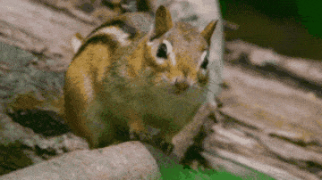

學生
就讀國立臺中科技大學智慧生產工程系，持續探索工程與科技的可能性。

我是鍾季恩，你也可以叫我 Middle。目前是國立臺中科技大學智慧生產工程系的學生；我喜歡從不同的體驗中學習，也樂於和人交流。
就讀國立臺中科技大學智慧生產工程系，持續探索工程與科技的可能性。
喜歡在球場上專注揮拍，也享受和朋友一起運動時的默契與節奏。
喜歡嘗試新事物、認識不同的人，相信每一次交流都有值得發現的地方。
這裡會慢慢記錄我的學習、生活與想嘗試的事。現在先從每一次小小的探索開始。
在智慧生產工程系學習，期待從課堂與實作中找到自己的方向。
以運動保持活力，也在一次次對打中享受專注與進步。
作品與經歷正在準備中，敬請期待。